GTA 6 comes out tomorrow. I spent today building my own GTA 1.
I am not a developer. I have never written a game. By the end of the afternoon I was being chased through my own city by a police helicopter.
, by Ramon Wieleman. Updated on : two updates at the end.
Tomorrow, 19 November, GTA 6 comes out. People have waited years for it, and it will look incredible.
The GTA I have feelings for is the first one. I was born in 1985 and was twelve when it came out in 1997. You looked straight down on a city of chunky pixels. The cars slid through the corners. There was a radio. You could do whatever you wanted, and what you wanted was usually to cause chaos and then get away from the police.
So this morning I thought: I do not want to wait for number six. I want number one back. And since AI is a daily topic in my work, I decided to see whether I could build that feeling myself. Today. Without being able to program.
The result is called Ramon's Rampage, and it runs in your browser. Play it
Arrows or WASD to drive and walk, E to get in and out of a car, Space for the handbrake, P for the map.
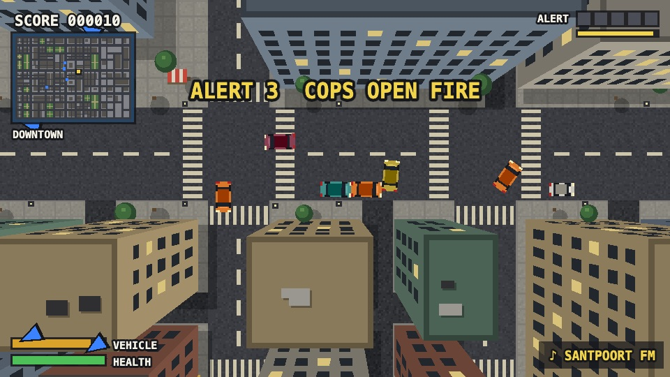
I am a Group Director at OpenValue. I know a fair bit about IT and AI, but I do not write software; we have people for that who are far better at it than I will ever be. I built this with Claude Code, an AI that writes the code, runs it and tests it while you talk to it. Here is what I did, in the order I did it.
I asked what I needed
My first message was a question: I want to rebuild the game I loved, which tools do I need and which AI model is best for it?
The answer was a short list of add-ons that make the AI work more carefully: one that makes it ask questions before it builds, one that makes it write a plan, one that makes it test everything it makes. I said: add them. That took a minute and it shaped the rest of the day.
I said what I loved, not how to build it
Then it asked me what I actually wanted. Not in technical terms. What did I love about that old game?
I wrote: the pixel look. The way the cars handled. Walking around with your character. Driving around freely, chaos, and getting away from the police. Missions I could do without.
That was the whole brief, and it was enough. Nobody asked me how any of it should be built.
The AI said no, and it was right
I asked it to call the game "Grand Theft Auto: Ramon's Rampage" and to look up screenshots of the original to copy.
It refused, politely. It would not use the name or copy the art of someone else's game. What it offered was a game of my own in the same kind of world, with the same kind of camera. So it became "Ramon's Rampage", set in a city that exists nowhere else.
I pushed a few more times during the day. I asked for a cover like the one of GTA 6. Same answer, and each time it came back with something of our own instead. I was a little annoyed each time. I would have been more annoyed with a colleague who said yes.
We picked the technology together
It gave me three options to build with and explained them in normal language. I liked the idea of a real game engine, but that would have made it hard for the AI to test its own work. We settled on a mix: a library called Phaser that runs in any browser, organised the tidy way a game engine would do it.
I did have one demand, because I am still an IT person: I wanted the newest version. I asked what the differences were and whether switching at that point was wise, and we went with the newest.
I asked for sketches, and rejected them
Before any real code, it showed me sketches of how the city could look. My reply was: none of these look right. The old game was not completely flat. The buildings had depth; they leaned away from you as you drove past.
So it made a small page with a slider for how much the buildings lean. I moved the slider until it felt like 1997 and said: that one. Setting 80, for the record.
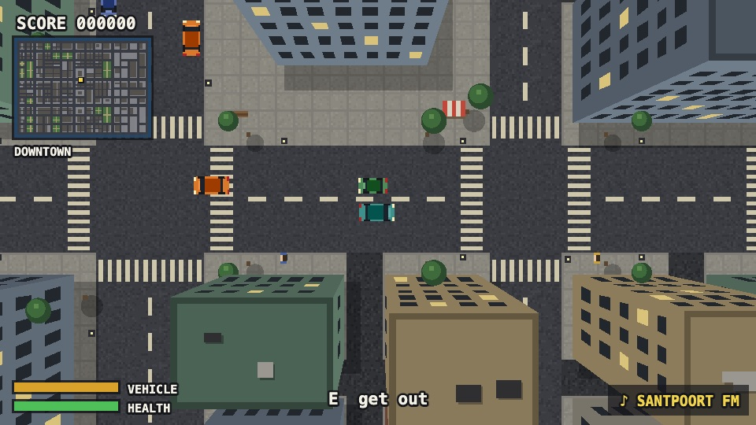
The result is called Ramon's Rampage, and it runs in your browser. Play it
Arrows or WASD to drive and walk, E to get in and out of a car, Space for the handbrake, P for the map.
Step one was only driving
The plan had seven steps. The first one was a car and a city and nothing else. The only question was whether driving felt good.
It did. The steering was right the first time. The rest I had opinions about, and I gave them the way you would to a contractor:
- The car looks blocky at speed.
- The alleys are too narrow to drive into.
- The city is too square and too boring. Give me different block sizes.
- The parks with trees are great. Half as many trees, though.
A little later all of that was fixed.
Then I started asking for fun things
Once the car worked I got greedy. A tank that can shoot, but rare: one in a hundred vehicles. Trucks with a trailer that actually hinges. Tanks and trucks that drive over other cars, which then burn and blow up.
And things that are just for me. The quiet part of town is called Santpoort-Noord, where I live. The biggest park is named after my daughter. There is a flower shop with my wife's name on the roof, an OpenValue tower, Code Nomads vans, and a banner for the Harddraverij, the harness race in my village that I help organise. None of it gets in the way of the game. You just find it if you look around.

I left, and told it to keep going
At some point I had to leave for a few hours, to take Emma to football training. I typed: keep building on your own judgement until the game is completely finished and tested, and make sure I can adjust things step by step afterwards. While I was away I could carry on from my iPhone, through Remote Control in the Claude app.
When I came back there was traffic that brakes when you step into the road, pedestrians who run when they hear shots, police with five alert levels, weapons, sound, a title screen, and a build log in which every decision it had made on my behalf was written down, with where to change it if I disagreed.
What impressed me most was the checking. It had asked a second AI, one that had not seen any of the work, to review everything. That reviewer found real mistakes. My favourite: you got points when the police ran over a pedestrian while chasing you. You could stand still, let the police cause the accidents, and watch your score go up. That got fixed before I ever saw it.
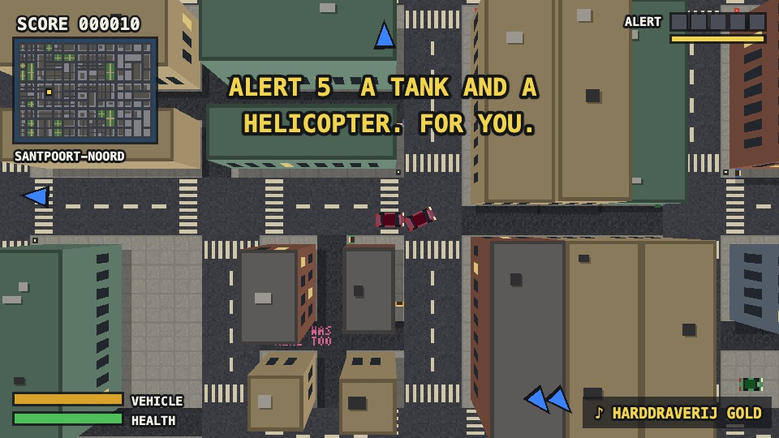
The result is called Ramon's Rampage, and it runs in your browser. Play it
Arrows or WASD to drive and walk, E to get in and out of a car, Space for the handbrake, P for the map.
I played it and kept a wish list
Then came the best part of the day. I played, and every time I thought "it would be nice if", I typed it. Often three wishes in a row while it was still working on the first.
- Music, with a different radio station in every car.
- Show me when police are coming up behind me.
- The tank is indestructible. Fix that.
- The sea is a wall. If I drive into it I want to sink.
- Skid marks when I use the handbrake. Tracks in the grass.
- If I have no weapon, let me throw a punch.
- At the highest alert level: police tanks and a helicopter.
- A map in the corner, with the names of the districts.
- A different start every time, with the weapons somewhere else.
Every one of those is in the game now. The music is composed by the AI too: eight stations, written as patterns of notes, played by the browser.
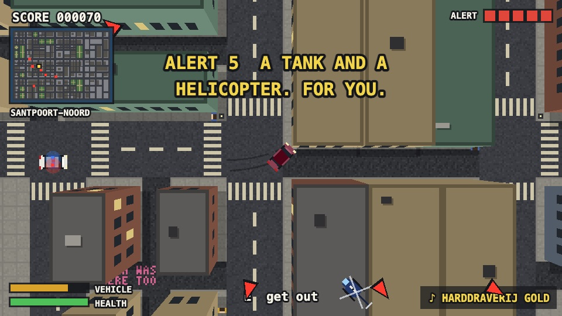

My family joined the cast
The last thing I wanted that afternoon was a proper opening, the way games used to have, with credits and a title that lands with a bang. I gave it three photos, of me, my wife Anne and our daughter Emma.
It cut each of us out of our photo, on my own laptop, without sending the photos anywhere, and redrew us as characters with flat colours and ink lines. In the evening I swapped those for drawings of the three of us that I had made with ChatGPT. The drawings had a neon sign in the background with the name of a city from the other game. It cut us out and left the sign where it was. On the title screen we even breathe a little.
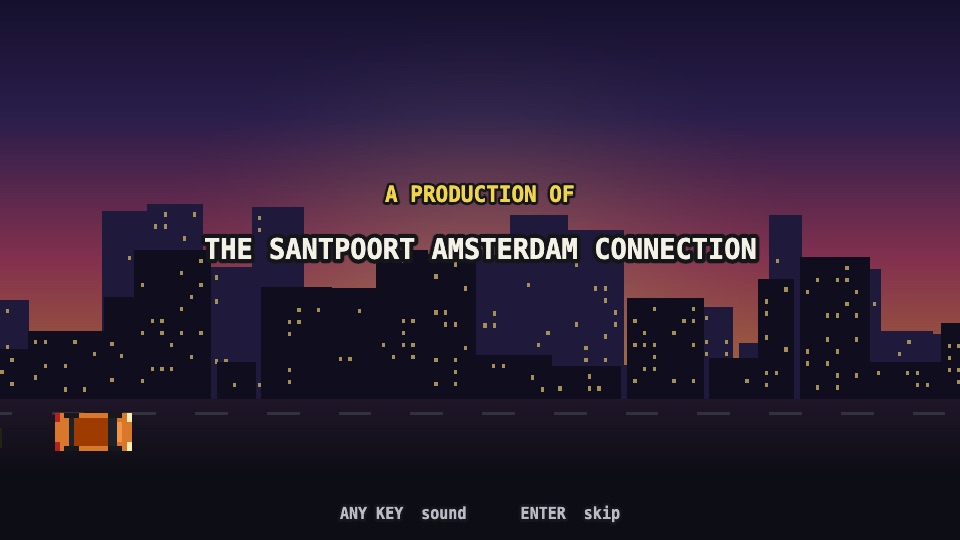
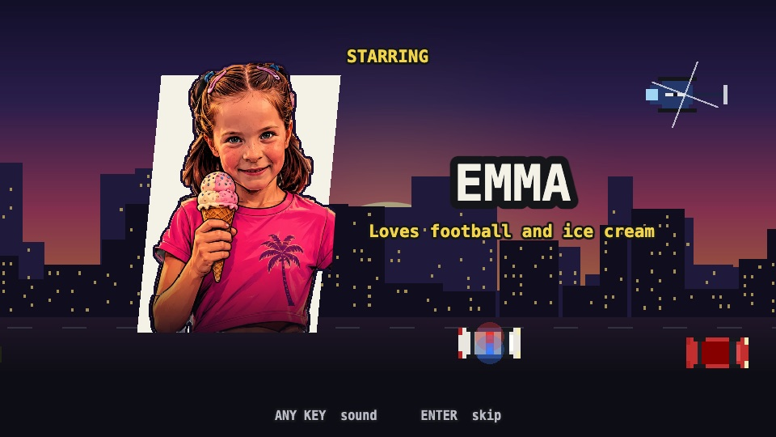
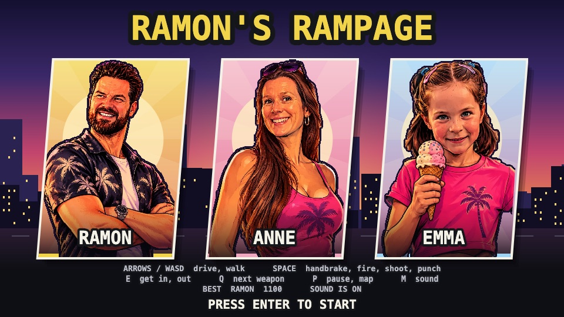
The website came along
A game needs somewhere to live, so I asked for a website as well: an about page, this post and the game. I had registered the domain myself. The rest I described the way I described the game, and I gave it my LinkedIn profile to work from. Most of the words about me are my own. None of the HTML is.
The only part that took real time was the address. The domain turned out to point somewhere else already, and after that was put right my own internet provider went on sending me to the old place for a while.
In the evening the list grew again
By the evening the game was on this website, and I was playing it instead of doing anything useful. So the list grew again.
- People should get out when I take their car. The angry ones should come after me.
- Let me type my name when a round ends, and keep the scores of everyone who plays.
- Every vehicle should sound like itself. A sports car like a sports car, a lorry like a lorry.
The first one is my favourite. Take a car and the driver steps out beside the door. Half of them run. The other half walk round the car and start hitting you, or kick the car while you sit in it.
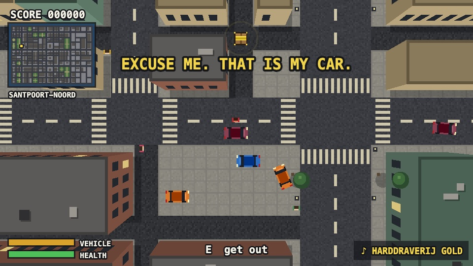
The scores of everyone needed something a web page cannot do by itself, which is remember things. So there is now a small server with a database behind the game, and one list for everybody.
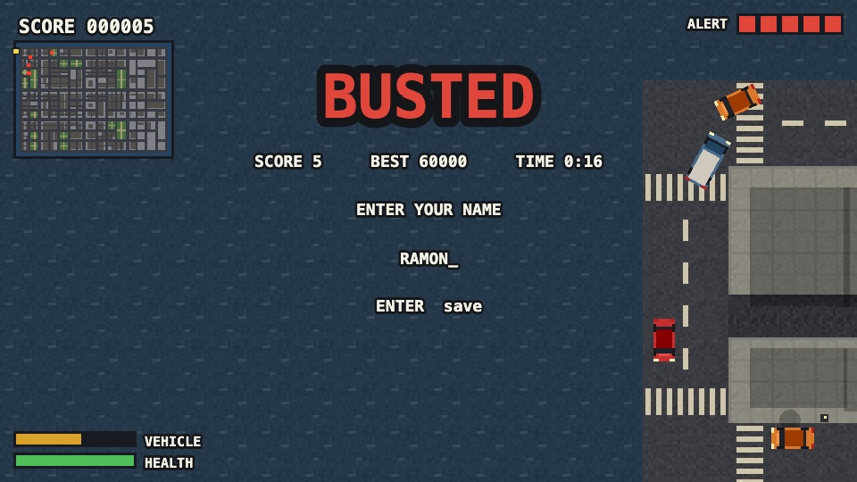
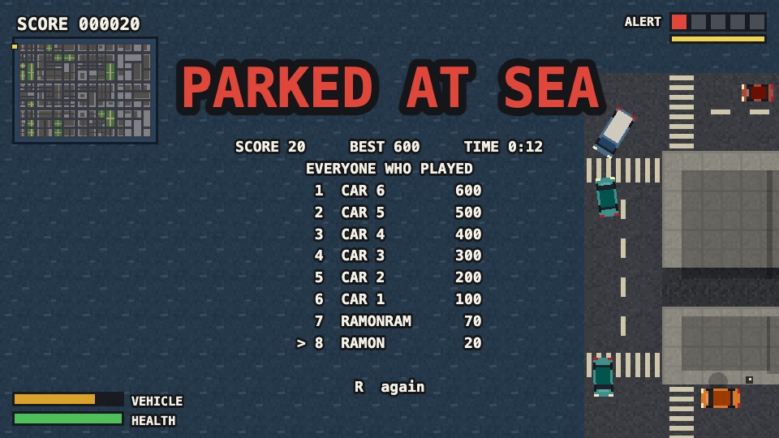
The engines I sent back twice. First every vehicle shared one hum. Then each got a voice made out of numbers, which I still did not like. The third time I asked for real ones, so the game now plays recordings of a Mini, a Ford Escort, a Porsche, a diesel lorry and a T-26 tank, among others, all given away by the people who recorded them.
The result is called Ramon's Rampage, and it runs in your browser. Play it
Arrows or WASD to drive and walk, E to get in and out of a car, Space for the handbrake, P for the map.
I asked for a test, and it failed one
My last request of the day was to test the code on security and on the ordinary rules of software development. It handed everything to a second AI that had built none of it.
That one found that the list of scores, finished an hour earlier, lost scores when players finished at the same moment. Of eight sent at once, seven vanished. The limit of six scores a minute per player let fifteen through. It also found a way the build could overwrite my own title picture.
None of the tests had caught any of it, because they ran against a stand-in that behaved better than the real thing. It was all fixed the same evening, and the scoreboard was rebuilt on a proper database.
What it added up to
| Time | One day, with a break of a few hours in the middle and an evening that got out of hand. Then the morning after, for what my colleagues found. |
|---|---|
| Code written by me | None. |
| Code written by the AI | About 15,000 lines, in almost a hundred saved steps. |
| Automatic tests | 368. They run in a few seconds and they all pass. |
| Times the AI told me no | A handful. All about not copying a game that already exists. |
What I take from it
At work, what AI means for software teams comes up all the time. Three things from today I will be repeating there.
The plan had seven steps, and after each one there was a game I could play. Ask for something you can try before you ask for the next thing.
I left for a few hours to take Emma to football training, and carried on from my iPhone through Remote Control in the Claude app. I came back to a game that worked, because the AI had written tests and had a second AI review its work. Make it check itself before you believe what it tells you.
Every decision it made for me is in a build log, and every number that matters, how fast a car goes, how many police cars come after you, sits in a settings file with a name I understand. Have it write down what it decided, in words you can read.
What I did not do
I did not read any of the 15,000 lines. Not one of them. The 368 tests that say the game works were written by the same AI that wrote the code, which is a little like marking your own homework. For a game about a tank in Santpoort that is fine. If the tank drives through a wall, nobody loses any money.
For software a client runs their business on, it is not fine. Somebody has to read what the AI wrote and say whether it is right, and that somebody is an engineer. The difference between my game and their system is the people who can do that. It is what I talk about with clients, and since today I have felt it myself.
And now, if you will excuse me: GTA 6 comes out tomorrow, and I have a helicopter to shake off first.
On a laptop you play with the keyboard. On a phone, turn it on its side and you get a stick and buttons on the screen.
Update, 19 November: our CTO is number one
This morning I shared the game with my colleagues. Shortly after nine the top of the list read BJS, 1,234,567.
BJS is Bert Jan Schrijver, the CTO of OpenValue. He had not driven a metre for it. He sent the score straight to the server, by hand, dressed up as the game. The same initials are further down the list with a 15 and a 20, which I take to be the ones he played.
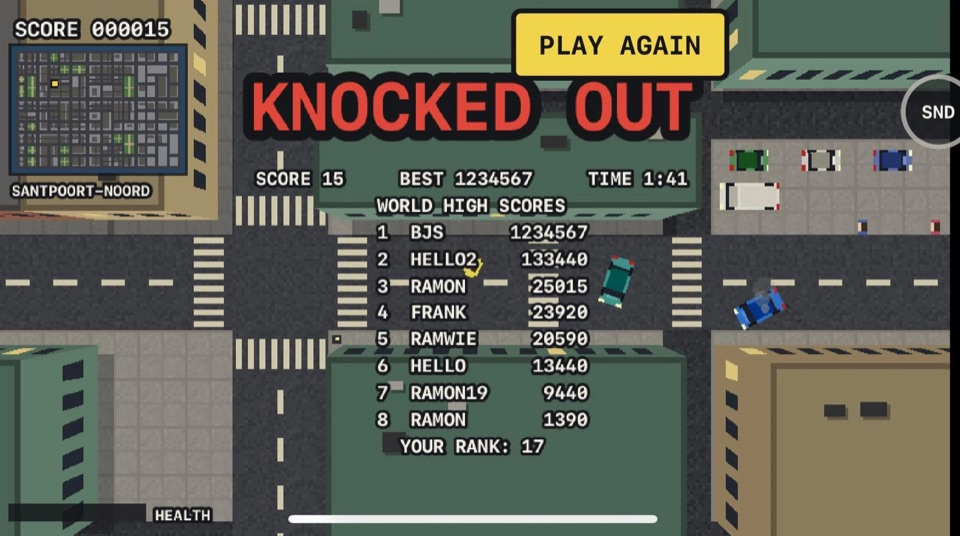
I cannot say nobody warned me. The AI had written in its own notes that whoever wants to cheat at a game about a tank in Santpoort can, and the second AI had described how. It stayed a sentence in a file until an engineer looked at the thing the way engineers do and tried it.
That hole is closed now. A score sent to the server by hand is refused. How the server tells the difference I will keep to myself.
This is the argument of this whole post, delivered by a colleague before lunch. Two AIs built and reviewed that scoreboard and I put it online. It took one expert less than a morning to walk through it. You cannot rely on vibe coding alone. Somebody who knows how systems get broken has to try to break yours, preferably before your CTO does.
Update, 19 November: it runs on a phone
The other thing colleagues do is ask for features. Frank Meerema asked in our Slack channel for controls on a phone. Fair enough: the game needed a keyboard.
It now has a stick under your left thumb and buttons under your right, and it asks you to turn the phone on its side. The AI tested that on a pretend phone on my laptop and reported that it worked. Then I tried it on my actual iPhone. The stick turned the car far too fast, and there was no sound.
The stick now steers by degrees. The sound should work as well. It hung on a detail I would never have guessed: an iPhone only lets a page make sound after a deliberate act, and it counts lifting a finger from the screen, where the game was listening for putting one down.
A second go on the phone turned up something else. The stick steered from the driver's seat, as the keys do, so once he faced down the screen, left and right swapped. Walking up felt fine and walking down felt wrong. On a phone the stick now points at the map: push it down and he goes down. On a laptop the keys still steer from the seat, where that works.
Same lesson as the scoreboard, on a smaller scale. Tested on a pretend phone is not tested.
If you want to react, I am on LinkedIn.